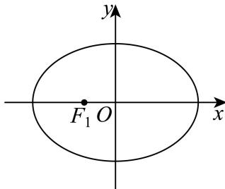
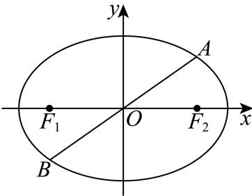
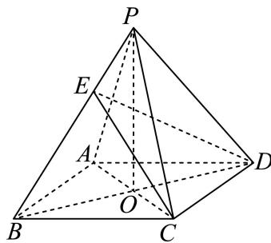
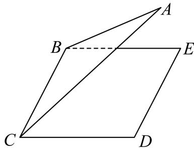
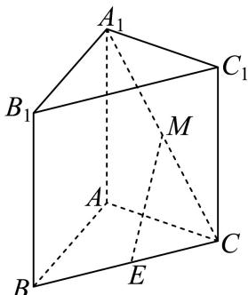

坐标、共线与数量积基础
利用坐标或非正交基底计算数量积，区分向量模与投影。
奉贤 · 第8题 ★★☆☆☆ · 教师预估
本题资料或解析有待核事项，预览不可作为已审定成品。
在复平面内，O 为坐标原点，复数 z1=i(−4−3i)，z2=12+5i 对应的点分别为 Z1,Z2，其中 i 为虚数单位，则 ⟨OZ1,OZ2⟩ 的大小为 ______。
考点：复数运算与复平面坐标；坐标数量积求向量夹角。
难度依据：复数乘法转坐标后求余弦与夹角
核查说明：仅核本题所列字段及页面；不等于全卷终审。；题干与解析已用于人工归类，尚未完成整题公式校净与独立数学终审。；题干夹角括号缺失，需规范向量夹角符号。；题干与解析已用于人工归类，尚未完成整题公式校净与独立数学终审。；题干夹角括号缺失，需规范向量夹角符号。 本次已按本机具名解析版PDF逐页视觉恢复题干：奉贤01为补集符号，第1页；奉贤08为两个位置向量夹角，第3页。此题题干缺项已解决，不代表原解析全量数学终审。
展开答案与解析
奉贤 · 第12题 ★★★★☆ · 教师预估
本题资料或解析有待核事项，预览不可作为已审定成品。
已知集合 ∂M={P0,P1,P2,⋯,Pn},n≥2,n∈N 是由函数 y=cosx,x∈[0,2π] 的图象上两两不相同的点构成的点集，集合 S={a∣a=OP0⋅OPi,i=0,1,2,⋯,n,n≥2,n∈N} ，其中 P0(0,1) P1(π,−1) ．若集合S中的元素按照从小到大的顺序排列能构成公差为d的等差数列，当 d∈{21,1} 时，则符合条件的点集M的个数为
考点：坐标数量积提取纵坐标；有限等差数列公差分类；余弦函数定值点枚举；有必选点约束的集合计数；点集到数集映射的重合与去重。
难度依据：公差两种情形下按同纵坐标点的非空选择计数
核查说明：题干与解析已用于人工归类，尚未完成整题公式校净与独立数学终审。；原解多个余弦值与横坐标被错排，计数思路可辨但公式未校净。；题干与解析已用于人工归类，尚未完成整题公式校净与独立数学终审。；原解多个余弦值与横坐标被错排，计数思路可辨但公式未校净。
展开答案与解析
崇明 · 第7题 ★☆☆☆☆ · 教师预估
已知 ∣a=(1,2),b=(2,k) ，如果 a//b ，那么实数k的值为
考点：平面向量共线坐标条件。
难度依据：涉及平面向量共线坐标条件；难度为教师预估，需结合原题条件复核。
核查说明：依据现有底稿归类，尚未逐页校卷、公式校净或独立数学终审。
展开答案与解析
徐汇 · 第4题 ★☆☆☆☆ · 教师预估
本题资料或解析有待核事项，预览不可作为已审定成品。
已知向量 a=(2,5,1),b=(4,m,5) ，若 a⋅b=3 ，则实数m的值为
考点：空间向量数量积坐标运算。
难度依据：空间向量数量积坐标运算；按所需步骤与推理量估计
核查说明：题干与解析已用于人工归类，尚未完成整题公式校净与独立数学终审。
展开答案与解析
普陀 · 第9题 ★★★☆☆ · 教师预估
本题资料或解析有待核事项，预览不可作为已审定成品。
设λ ∈ R，在如图所示的平行六面体 ABCD−A1B1C1D1 1中， ∠A1AB=∠A1AD=∠BAD=3π. AA1=2,AB=AD=1 ，点M是棱 C1D1 的中点， λ1N=λA1D1 ，若 AM⟶.CN⟶=2 ，则λ的值为

考点：非正交空间基底的数量积展开；平行六面体中点与棱上点的向量表示。
难度依据：基底不正交需逐项计入夹角
核查说明：仅修复所列OCR公式及其定界符错位；原解数学疑点和其他可渲染错识未因此消除。；题干与解析已用于人工归类，尚未完成整题公式校净与独立数学终审。；题干点N的向量等式严重错识，原解指向A1N=λA1D1，须视觉回核后修复。；仅修复所列OCR公式及其定界符错位；原解数学疑点和其他可渲染错识未因此消除。；题干与解析已用于人工归类，尚未完成整题公式校净与独立数学终审。；题干点N的向量等式严重错识，原解指向A1N=λA1D1，须视觉回核后修复。
展开答案与解析
杨浦 · 第6题 ★★☆☆☆ · 教师预估
本题资料或解析有待核事项，预览不可作为已审定成品。
已知 ∣a∣=b=1 ，若 (2a−b)⊥b ，则向 Eqa. 与 ∣b 的夹角的余弦值为
考点：垂直数量积与夹角。
难度依据：垂直数量积与夹角；按所需步骤与推理量估计
核查说明：题干与解析已用于人工归类，尚未完成整题公式校净与独立数学终审。
展开答案与解析
金山 · 第2题 ★☆☆☆☆ · 教师预估
已知向量 a=(1,2),b=(3,k) ， Πa/b ，则实数k =
考点：向量平行坐标条件。
难度依据：涉及向量平行坐标条件；难度为教师预估，需结合原题条件复核。
核查说明：依据现有底稿归类，尚未逐页校卷、公式校净或独立数学终审。
展开答案与解析
长宁 · 第8题 ★★☆☆☆ · 教师预估
已知向量 a=(1,2),b=(3,−1) ，则向量 bℏ±a 方向上的投影的坐标是
考点：利用数量积求投影。
难度依据：向量投影的坐标运算；利用数量积求投影
展开答案与解析
青浦 · 第14题 ★☆☆☆☆ · 教师预估
本题资料或解析有待核事项，预览不可作为已审定成品。
若点 P(x,y,z)(xyz=0) 关于xOy的对称点为A，关于z轴的对称点为B，则A、B两点的对称是（ ）
A. 关 FXOz− 平面对称
B. 关于x轴对称
C. 关于y轴对称
D. 关于坐标原点对称
考点：空间坐标轴平面对称；空间点的坐标与中心对称。
难度依据：坐标变号两次比较即可
核查说明：题干与解析已用于人工归类，尚未完成整题公式校净与独立数学终审。
展开答案与解析
黄浦 · 第8题 ★★★☆☆ · 教师预估
在正四面体 ABCD 中，点N是 △ABC 的中心，若 DN=λDA+μDB+νBC(λ,μ,ν∈R) ，则λ+μ+ν=
考点：由重心表示与向量基底求系数。
难度依据：正四面体中心的空间向量表示；由重心表示与向量基底求系数
展开答案与解析
投影、距离与平面几何范围
将数量积转为角度、投影或距离平方，研究全称约束和取等构形。
嘉定 · 第12题 ★★★★☆ · 教师预估
本题资料或解析有待核事项，预览不可作为已审定成品。
已知实数 [x1,x2,y1,y2 满足： x12+y12=1,x22+y22=1,x1x2+y1y2=21 ，则2∣x1+y1−1∣+2∣x2+y2−1∣ 的最小值为
考点：点线距离和与单位圆弦的几何转化；数量积确定圆心角；定角弦及投影的距离最值。
难度依据：绝对值转点线距离并区分两点位于直线同异侧
核查说明：题干与解析已用于人工归类，尚未完成整题公式校净与独立数学终审。；原解几处角区间及同侧讨论有乱码，完整分类不等于已核证明。；题干与解析已用于人工归类，尚未完成整题公式校净与独立数学终审。；原解几处角区间及同侧讨论有乱码，完整分类不等于已核证明。
展开答案与解析

宝山 · 第12题 ★★★★☆ · 教师预估
本题资料或解析有待核事项，预览不可作为已审定成品。
已知平面向量a、b满足∣a∣=1，∣b∣=m∈(1,2)，且对任意单位向量c，都有∣a⋅c∣+∣b⋅c∣≤6，则a⋅b的最大值为______。（用含m的式子表示）
考点：单位向量投影的全称约束与数量积最值。
难度依据：涉及单位向量投影的全称约束与数量积最值；难度为教师预估，需结合原题条件复核。
核查说明：仅修复所列OCR公式及其定界符错位；原解数学疑点和其他可渲染错识未因此消除。；原解析保留在源字段及精确补丁old中；本题针对性纠错已独立复核，不外推为全卷数学终审。；原解以单一上界条件排除钝角的推理不充分，须复核全称约束及最值可取性。；依据现有底稿归类，尚未逐页校卷、公式校净或独立数学终审。；仅修复所列OCR公式及其定界符错位；原解数学疑点和其他可渲染错识未因此消除。；原解析保留在源字段及精确补丁old中；本题针对性纠错已独立复核，不外推为全卷数学终审。；原解以单一上界条件排除钝角的推理不充分，须复核全称约束及最值可取性。
展开答案与解析
普陀 · 第10题 ★★★★☆ · 教师预估
本题资料或解析有待核事项，预览不可作为已审定成品。
设平面上四点P、Q、M、N满足： ∣PM∣=∣PN∣=4,∣PQ∣=2 ，若 QM⟶⋅QN⟶=0 ，则 ∣MN∣ |的最小值为
考点：数量积零转直角圆周关系；双圆约束中的弦长最值。
难度依据：将垂直条件转圆再用距离约束确定最短弦
核查说明：题干与解析已用于人工归类，尚未完成整题公式校净与独立数学终审。；原解将r²=8−2√7舍去却随后取其为最小值，又出现r>4的不可能分支；结论不能替代证明，须重核。；题干与解析已用于人工归类，尚未完成整题公式校净与独立数学终审。；原解将r²=8−2√7舍去却随后取其为最小值，又出现r>4的不可能分支；结论不能替代证明，须重核。
展开答案与解析

松江 · 第10题 ★★★★☆ · 教师预估
本题资料或解析有待核事项，预览不可作为已审定成品。
已知点P为椭圆 4x2+3y2=1 上任意一点，EF为圆 N:(x−1)2+y2=4 的任意一条直径，则 PE⋅PF 的取值范围是
考点：数量积转距离平方；椭圆与焦点距离最值。
难度依据：数量积转距离平方；椭圆与焦点距离最值；按所需步骤与推理量估计
核查说明：题干与解析已用于人工归类，尚未完成整题公式校净与独立数学终审。；解析中向量数量积与夹角余弦的符号步骤不一致，需审校。；题干与解析已用于人工归类，尚未完成整题公式校净与独立数学终审。；解析中向量数量积与夹角余弦的符号步骤不一致，需审校。
展开答案与解析
松江 · 第11题 ★★★★★ · 教师预估
本题资料或解析有待核事项，预览不可作为已审定成品。
已知平面向量a、b的夹角为θ，b−a与a的夹角为3θ，∣a∣=1，a和b−a在b上的投影分别为x、y，则x(y+sinθ)的取值范围是______。
考点：投影与向量三角形；正弦定理和三角最值。
难度依据：需从向量投影还原三角关系，再用正弦定理处理最值；原题符号待核，评级暂定。
核查说明：仅恢复题干；解析和其他题目未全面校净、未数学终审。；原解仍有向量模长等乱码及其他未审内容，需继续回核。；仅核本题所列字段及页面；不等于全卷终审。；题干与解析已用于人工归类，尚未完成整题公式校净与独立数学终审。；题干向量和投影对象乱码，需核题图及原卷。；仅恢复题干；解析和其他题目未全面校净、未数学终审。；原解仍有向量模长等乱码及其他未审内容，需继续回核。；题干与解析已用于人工归类，尚未完成整题公式校净与独立数学终审。；题干向量和投影对象乱码，需核题图及原卷。
展开答案与解析
虹口 · 第17题 ★★★☆☆ · 教师预估
设 f(x)=sinωx(ω>0)
(1) (6分)当函数 ⋅y=f(x) 的最小正周期为2π时，求 y˙=f(x)+cos x在 [0,2π] 上的最大值；
(2) (8分)若ω = 2，且在 △ABC♯ ，角A、B、C所对的边长为a、b、c，锐角A满足
f(A+6π)=0,AB⋅AC=4 ，求a的最小值
考点：（1）辅助角公式与最值；（2）定角数量积和边长下界。
难度依据：涉及（1）辅助角公式与最值；（2）定角数量积和边长下界；难度为教师预估，需结合原题条件复核。
核查说明：依据现有底稿归类，尚未逐页校卷、公式校净或独立数学终审。
展开答案与解析
金山 · 第12题 ★★★★☆ · 教师预估
本题资料或解析有待核事项，预览不可作为已审定成品。
已知 O 为坐标原点，向量 OA,OB 满足 ∣OA∣+∣OB∣=8，将 OA 绕点 O 按逆时针方向旋转 90∘，得到向量 OC。若 OB+OC=(−3,3)，i=(1,0)，则 (OA+OB)⋅i 的最大值为______。
考点：旋转坐标、椭圆轨迹与投影最值。
难度依据：涉及旋转坐标、椭圆轨迹与投影最值；难度为教师预估，需结合原题条件复核。
核查说明：题干向量与模长条件识别不清，原解参数亦有冲突，须回源。；依据现有底稿归类，尚未逐页校卷、公式校净或独立数学终审。
展开答案与解析

青浦 · 第12题 ★★★★☆ · 教师预估
本题资料或解析有待核事项，预览不可作为已审定成品。
已知A,B,C是单位圆上任意不同三点，则 ABAB⋅AC 的取值范围是
考点：数量积除模转化为有向投影；单位圆上三点的投影范围。
难度依据：利用圆上投影上下界且审查互异点下端点可达性
核查说明：仅修复所列OCR公式及其定界符错位；原解数学疑点和其他可渲染错识未因此消除。；原解析保留在源字段及精确补丁old中；本题针对性纠错已独立复核，不外推为全卷数学终审。；题干与解析已用于人工归类，尚未完成整题公式校净与独立数学终审。；原解取AB=2x后写0<x<1，漏了AB为直径时x=1情形；最终范围仍需补充该情形与端点不可达证明。；仅修复所列OCR公式及其定界符错位；原解数学疑点和其他可渲染错识未因此消除。；原解析保留在源字段及精确补丁old中；本题针对性纠错已独立复核，不外推为全卷数学终审。；题干与解析已用于人工归类，尚未完成整题公式校净与独立数学终审。；原解取AB=2x后写0<x<1，漏了AB为直径时x=1情形；最终范围仍需补充该情形与端点不可达证明。
展开答案与解析
静安 · 第18题 ★★★☆☆ · 教师预估
本题资料或解析有待核事项，预览不可作为已审定成品。
已知向量 a=(cos23x,sin23x),b=(cos2x,−sin2x) ，且 x∈[0,2π]
(1) (6分)求→a ⋅→b 及 a+b ；
(2) (8分) iLf(x)=a⋅b−a+b ，求函数 y=f(x) 的最小值.
考点：（1）坐标数量积与模；（2）倍角换元求最值。
难度依据：向量数量积与三角最值；（1）坐标数量积与模；（2）倍角换元求最值
核查说明：第（1）问向量和的模符号缺失，原解有模，须核原卷。
展开答案与解析
圆锥曲线中的分点与向量条件
把向量模、垂直或数量积转化为弦与交点条件，完整保留大题。
嘉定 · 第20题 ★★★★☆ · 教师预估
本题资料或解析有待核事项，预览不可作为已审定成品。
在平面直角坐标系 xOy⊞ ，已知椭圆Γ: 5x2+4y2=1,F1,F2 是其左､右焦点，过椭圆Γ右焦点 F2 的直线PQ交椭圆于P,Q两点
(1) (4分)若− PF1⋅PF2=3 ，求点P的坐标；
(2) (6分)若 △F1PQ 的面积为 2140 ，求直线PQ的方程；
(3) (8分)设直线l与椭圆Γ交于A,B两点，M为线段AB的中点.当 kOM⋅kAB=kOA⋅kOB 时，△OA B的面积是否为定值？如果是，请求出这个定值；如果不是，请说明理由.
考点：（1）数量积与椭圆联立求点；（2）韦达定理表示焦点弦面积；（3）点差法和斜率关系证明面积定值。
难度依据：（1）数量积与椭圆联立求点；（2）韦达定理表示焦点弦面积；（3）点差法和斜率关系证明面积定值
核查说明：题干与解析已用于人工归类，尚未完成整题公式校净与独立数学终审。
展开答案与解析

奉贤 · 第20题 ★★★★★ · 教师预估
本题资料或解析有待核事项，预览不可作为已审定成品。

椭圆Γ: a2x2+y2=1(a>1) 的左右焦点分别为 F1,F2 ，设 P(x0,y0) 是第一象限内椭圆上的一点，PF1 的延长线交椭圆于点 Q(x1,y1)

(1) (4分)若椭圆的离心率 22 ，求a的值；
(2) (6分) fa=2,PQ⋅OF1=512 ，求x0；
(3) (8分)若a = 2，过点 T(0,t) 的直线l与椭圆Γ交于M、N两点，且 ∣MN∣=2 ，则当 t≥0H 时，判 断符合要求的直线有几条，说明理由？
考点：（1）离心率定参数；（2）向量约束与焦点弦联立；（3）按参数讨论定长弦数目并补竖直线。
难度依据：（1）离心率定参数；（2）向量约束与焦点弦联立；（3）按参数讨论定长弦数目并补竖直线
核查说明：题干与解析已用于人工归类，尚未完成整题公式校净与独立数学终审。；原解第3问竖直线讨论写成t>0但题设允许t=0，最后汇总包含t=0；须规范边界说明。；题干与解析已用于人工归类，尚未完成整题公式校净与独立数学终审。；原解第3问竖直线讨论写成t>0但题设允许t=0，最后汇总包含t=0；须规范边界说明。
展开答案与解析
宝山 · 第20题 ★★★★☆ · 教师预估
本题资料或解析有待核事项，预览不可作为已审定成品。
…
已知椭圆 ::9x2+3y2=1 : ，直线l经过椭圆Γ的右顶点P且与椭圆交于另一点A，设线段AP的中点为M.

(1) (4分)求椭圆Γ的焦距和离心率；
(2) (6分)若 kOM=−31. ，求直线AP的方程；
(3) (8分)过点P再作一条直线与椭圆Γ交于点B，线段BP的中点为N.若 OM⊥ON ，则直线AB是否经过定点？若经过定点，求出定点坐标；若不经过定点，请说明理由
考点：（1）椭圆离心率；（2）弦中点斜率；（3）向量垂直与定点。
难度依据：涉及（1）椭圆离心率；（2）弦中点斜率；（3）向量垂直与定点；难度为教师预估，需结合原题条件复核。
核查说明：仅修复所列OCR公式及其定界符错位；原解数学疑点和其他可渲染错识未因此消除。；第（3）问舍根及特殊位置须回核。；依据现有底稿归类，尚未逐页校卷、公式校净或独立数学终审。；仅修复所列OCR公式及其定界符错位；原解数学疑点和其他可渲染错识未因此消除。；第（3）问舍根及特殊位置须回核。
展开答案与解析


崇明 · 第20题 ★★★★☆ · 教师预估
本题资料或解析有待核事项，预览不可作为已审定成品。
已知椭圆Γ: 4y2+3x2=1 ，点 F1 、 F2 分别是椭圆的下焦点和上焦点，过点 F2 的直线l与椭圆交于A、B两点
(1) (4分)若直线l平行于x轴，求线段AB的长；
(2) (6分)若点A在y轴左侧，且− F1A⋅F2A=49 ，求直线l的方程；
(3) (8分)已知椭圆上的点C满足 ∣CA∣=∣CB∣ ，是否存在直线l使得△ABC的重心在x轴上？若存在，请求出直线l的方程，若不存在，请说明理由
考点：（1）焦点弦长；（2）数量积求弦；（3）等腰与重心条件。
难度依据：涉及（1）焦点弦长；（2）数量积求弦；（3）等腰与重心条件；难度为教师预估，需结合原题条件复核。
核查说明：原解上焦点坐标及后续分母前后不一致，须回核。；依据现有底稿归类，尚未逐页校卷、公式校净或独立数学终审。
展开答案与解析

普陀 · 第20题 ★★★★☆ · 教师预估
本题资料或解析有待核事项，预览不可作为已审定成品。
设 m>0, m>0, F1∖ F2 分别是双曲线Γ: a2x2−y2=1 的左、右焦点，直线 l:x−my−2=0−4 经过 点 F2− 与Γ的右支交于A、B两点，点O是坐标原点.
(1) (4分)若点M是Γ上的一点， ∣MF1∣=2 ，求 ∣MF2 |的值；
(2) (6分)设λ、 μ∈R: ，点P在直线 z˙x=6. 上，若点O、A、P、B满足： OA=λBP,OB=μAP 求点P的坐标；
(3) (8分)设AO的延长线与Γ交于G点，若向量− 与 OB 满足： OA⋅OB≥17 ，求 △GAB 的面积S 的取值范围.
考点：（1）由焦点和定义求距离；（2）向量关系转平行四边形与中点；（3）数量积限定参数后求三角形面积范围。
难度依据：（1）由焦点和定义求距离；（2）向量关系转平行四边形与中点；（3）数量积限定参数后求三角形面积范围
核查说明：题干与解析已用于人工归类，尚未完成整题公式校净与独立数学终审。；题干a>0误写为重复m>0，部分向量标签残缺，需视觉回源。；题干与解析已用于人工归类，尚未完成整题公式校净与独立数学终审。；题干a>0误写为重复m>0，部分向量标签残缺，需视觉回源。
展开答案与解析

松江 · 第20题 ★★★★★ · 教师预估
本题资料或解析有待核事项，预览不可作为已审定成品。
如果一条双曲线的实轴和虚轴分别是一个椭圆的长轴和短轴，则称它们为“共轴”曲线．若双曲线 C1 与椭圆 C2 是“共轴”曲线，且椭圆 C2:9x2+b2y2=1(0<b<3) e1e2=945(e1 、 e2 分别为曲线 ℘ 、 C2 的离心率）．已知点M(1,0)，点P为双曲线 C1 上任意一点
(1) (4分)求双曲线 C1 的方程；
(2) (6分)延长线段PM到点Q，且 ∣PM∣=2∣MQ∣ ，若点Q在椭圆 C2 上，试求点P的坐标；
(3) (8分)若点P在双曲线 C1 的右支上，点A、B分别为双曲线 C1 的左、右顶点，直线PM交双曲线的左支于点R，直线AP、BR的斜率分别为 ιAP∖ kBR ．是否存在实数λ，使得 kAP=λkBR? 若存在，求出λ的值；若不存在，请说明理由
考点：（1）离心率积确定共轴曲线；（2）分点坐标与交点；（3）顶点相关斜率比例。
难度依据：需识别共轴关系、设分点并通过参数与韦达关系证明斜率比例。
核查说明：题干与解析已用于人工归类，尚未完成整题公式校净与独立数学终审。；共轴关系的符号与下标有误识，需回源。；题干与解析已用于人工归类，尚未完成整题公式校净与独立数学终审。；共轴关系的符号与下标有误识，需回源。
展开答案与解析

浦东 · 第20题 ★★★★☆ · 教师预估
本题资料或解析有待核事项，预览不可作为已审定成品。
已知椭圆 8x2+4y2=1 的左、右焦点分别为 F1, F2 ，过坐标原点的直线交椭圆于A、B两点，点A在第一象限

(1) (4分)若 ∣OA∣=6. ，求点A的坐标；
(2) (6分)求− AF1+3AF2 的取值范围；
(3) (8分)若 AE⊥x 轴，垂足为 E, ，连结BE并延长交椭圆于点 C, ，求 △ABCH 积的最大值
考点：（1）椭圆与距离条件求点；（2）焦点向量模的取值范围；（3）椭圆弦与三角形面积最值。
难度依据：椭圆参数向量模与三角形面积；焦点向量模；按所需步骤与推理量估计
核查说明：题干与解析已用于人工归类，尚未完成整题公式校净与独立数学终审。；第（2）问向量模符号丢失，须回源。；题干与解析已用于人工归类，尚未完成整题公式校净与独立数学终审。；第（2）问向量模符号丢失，须回源。
展开答案与解析

虹口 · 第20题 ★★★★☆ · 教师预估
本题资料或解析有待核事项，预览不可作为已审定成品。
已知椭圆Γ: 4x2+y2=1 1的左、右焦点分别为 F1,F2 ，右顶点为A，上顶点为B，设P为Γ上的一点(1) (4分)当 PF1⊥F1F2 时，求 ∣PF2 |的值；
(2) (6分)若P点坐标为 (1,23) ，则在Γ上是否存在点Q使 △APQ 的面积为 23+1 ，若存在，请求出所有满足条件的点Q的坐标；若不存在，请说明理由；
(3) (8分)已知D点坐标为(0,m)，过点P和点D的直线l与椭圆Γ交于另一点T，当直线l与x轴和y轴 均不平行时，有 PT⋅(BP+BT)=0 ，求实数m的取值范围
考点：（1）椭圆焦点；（2）定面积与交点；（3）数量积与中点参数范围。
难度依据：涉及（1）椭圆焦点；（2）定面积与交点；（3）数量积与中点参数范围；难度为教师预估，需结合原题条件复核。
核查说明：第（2）问平行线距离公式中的符号与随后解出的q不一致，须回源核对。；依据现有底稿归类，尚未逐页校卷、公式校净或独立数学终审。
展开答案与解析


闵行 · 第10题 ★★★☆☆ · 教师预估
本题资料或解析有待核事项，预览不可作为已审定成品。
已知 F1,F2 分别为椭圆 4x2+2y2=1 的左、右焦点，过 F1 的直线交椭圆于A、B两点．若 AF1⋅AF2=0 ，则 AF2⋅BF2
考点：由垂直定位短轴顶点并计算数量积。
难度依据：椭圆焦点与向量垂直；由垂直定位短轴顶点并计算数量积
核查说明：仅修复所列OCR公式及其定界符错位；原解数学疑点和其他可渲染错识未因此消除。
展开答案与解析

闵行 · 第20题 ★★★★★ · 教师预估
已知圆 O:x2+y2=1 ，双曲线Γ: x2−b2y2=1 ，直线l: y=kx+b ，其中 X∈R,b>0
(1) (4分)当b = 2时，求双曲线Γ的离心率；
(2) (6分)若l与圆O相切，证明：l与双曲线Γ的左右两支各有一个公共点；
(3) (8分)设l与y轴交于点P，与圆O交于点A、B，与双曲线Γ的左右两支分别交于点C、D，四个点从左至右依次为C、A、B、D．当 k=22 时，是否存在实数b，使得 PA⋅PC=PB⋅PD∣ 成立？若存在，求出b的值；若不存在，说明理由
考点：（1）求离心率；（2）联立及根的符号证明交两支；（3）韦达定理与数量积求参数。
难度依据：直线与圆、双曲线交点关系；（1）求离心率；（2）联立及根的符号证明交两支；（3）韦达定理与数量积求参数
展开答案与解析

空间位置、角度与距离
结合空间建系、法向量或线性表示处理角距及共面约束。
嘉定 · 第10题 ★★★☆☆ · 教师预估
本题资料或解析有待核事项，预览不可作为已审定成品。
已知空间向量 OB1,OB2,OB3 两两垂直，若空间点A满足 AB1=AB2=AB3=1 ，记OP=OB1+OB2+OB3 ，且 ⟶AP≤1 ，则 OA 的取值范围为
考点：空间正交向量数量积与模平方恒等式；等距点约束的空间度量。
难度依据：须将三组距离条件合并消去交叉项
核查说明：题干与解析已用于人工归类，尚未完成整题公式校净与独立数学终审。；题干末尾将模长写成向量的取值范围；原PDF文字层及解析均有模长线，应回核后修复。；题干与解析已用于人工归类，尚未完成整题公式校净与独立数学终审。；题干末尾将模长写成向量的取值范围；原PDF文字层及解析均有模长线，应回核后修复。
展开答案与解析
奉贤 · 第15题 ★★★☆☆ · 教师预估
本题资料或解析有待核事项，预览不可作为已审定成品。
在四棱锥 S−ABCD 中，若 SA=xSB+ySC+zSD ，则实数组(x, y, z)可能是（ ）
A. (1,−1,1)
B. (1,0,−1)
C. (1,0,0)
D. (1,−1,−1)
考点：空间向量线性表示与共面约束；四棱锥底面形状的可实现性。
难度依据：向量线性式须检验能否构成真实四棱锥
核查说明：题干与解析已用于人工归类，尚未完成整题公式校净与独立数学终审。
展开答案与解析

奉贤 · 第19题 ★★★★☆ · 教师预估
本题资料或解析有待核事项，预览不可作为已审定成品。
如图为正四棱锥 P−ABCD,O 为底面ABCD的中心


(1)图
(2)图
(1) (6分)求证： CD// 平面 PAB, 平面 PAC⊥ 平面PBD；
(2) (8分)设E为PB上的一点，− BE=32BP.
在下面两问中选一个，
①若 AD=AP=32. ，求直线EC与平面BED所成角的大小
②已知平面ECD与平面ABCD所成锐二面角的大小为 arctan22 ，若 AD=32 ，求AP的长
考点：（1）证明线面平行与面面垂直；（2）选①建立坐标求线面角，选②由二面角反求棱长。
难度依据：（1）证明线面平行与面面垂直；（2）选①建立坐标求线面角，选②由二面角反求棱长
核查说明：题干与解析已用于人工归类，尚未完成整题公式校净与独立数学终审。；题干同时有图1图2和两种选做题，考点已分别标注，不得漏掉选②。；题干与解析已用于人工归类，尚未完成整题公式校净与独立数学终审。；题干同时有图1图2和两种选做题，考点已分别标注，不得漏掉选②。
展开答案与解析
宝山 · 第15题 ★★★☆☆ · 教师预估
…
如图，正四棱柱 ABCD−A1B1C1D1 的底面ABCD边长为1，E为AD上任意一点，F为 CC1 中点，若棱 C1D1 上至少存在一点P使得 PE⊥PF ，则棱长 AA1 的最大值为（ ）

A. 22
B. 1
C. 2
D. 2
考点：空间直角条件与坐标判别。
难度依据：涉及空间直角条件与坐标判别；难度为教师预估，需结合原题条件复核。
核查说明：依据现有底稿归类，尚未逐页校卷、公式校净或独立数学终审。
展开答案与解析
徐汇 · 第18题 ★★★★☆ · 教师预估
本题资料或解析有待核事项，预览不可作为已审定成品。
如图，在四棱锥 P−ABCD 中， AD//BC,∠ADC=∠PAB=2π,BC=CD=21AD .E为棱AD的中点，异面直线PA与CD所成角的大小为 2π

(1) (6分)求证： CD/λˉ 平面PBE；
(2) (8分)若二面角 P−CD−A 的大小为 4π ，求直线PA与平面PCE所成角的正弦值.
考点：（1）中点与线面平行判定；（2）二面角转线面角。
难度依据：线面平行与二面角及线面角；空间法向量求线面角；按所需步骤与推理量估计
核查说明：题干与解析已用于人工归类，尚未完成整题公式校净与独立数学终审。
展开答案与解析


杨浦 · 第17题 ★★★☆☆ · 教师预估
本题资料或解析有待核事项，预览不可作为已审定成品。
如图，在正方体 ABCD−A1B1C1D1 中，点E、F分别是棱AB、BC的中点.

(1) (6分)求证： EF⊥BD1 ；
(2) (8分)求二面角 B1−EF−B 的大小.
考点：（1）正方体线线垂直；（2）二面角。
难度依据：正方体垂直与二面角；向量证明垂直；按所需步骤与推理量估计
核查说明：题干与解析已用于人工归类，尚未完成整题公式校净与独立数学终审。
展开答案与解析


松江 · 第18题 ★★★☆☆ · 教师预估
本题资料或解析有待核事项，预览不可作为已审定成品。
如图，已知AB⊥平面ACD，AB∥DE， △ACD 为等边三角形， AD=DE=2AB ，F为CD的中点

（1）求证：AF∥平面BCE；
（2）求直线AD和平面BCE所成角的正弦值
考点：（1）中点连线与线面平行；（2）空间向量求线面角。
难度依据：线面平行及线面角；空间法向量；按所需步骤与推理量估计
核查说明：题干与解析已用于人工归类，尚未完成整题公式校净与独立数学终审。
展开答案与解析
浦东 · 第11题 ★★★☆☆ · 教师预估
本题资料或解析有待核事项，预览不可作为已审定成品。
已知空间中三个单位向量 OA1⋅OA2⋅OA3,OA1⋅OA2=OA2⋅OA3=OA3⋅OA1=0 ，P为空间中一点，且满足 OP⋅OA1=1,OP⋅OA2=2,OP⋅OA3=3 ，则点P个数的最大值为
考点：正交单位向量与空间坐标计数。
难度依据：正交单位向量与空间坐标计数；按所需步骤与推理量估计
核查说明：仅修复所列OCR公式及其定界符错位；原解数学疑点和其他可渲染错识未因此消除。；题干与解析已用于人工归类，尚未完成整题公式校净与独立数学终审。；向量之间连接符错误，须校正原始符号。；仅修复所列OCR公式及其定界符错位；原解数学疑点和其他可渲染错识未因此消除。；题干与解析已用于人工归类，尚未完成整题公式校净与独立数学终审。；向量之间连接符错误，须校正原始符号。
展开答案与解析

虹口 · 第9题 ★★★☆☆ · 教师预估
如图，已知正三角形ABC和正方形BCDE的边长均为2，且二面角 A−BC−D 的大小为 6π ，则AC.BD=

考点：二面角与空间向量数量积。
难度依据：涉及二面角与空间向量数量积；难度为教师预估，需结合原题条件复核。
核查说明：依据现有底稿归类，尚未逐页校卷、公式校净或独立数学终审。
展开答案与解析
虹口 · 第15题 ★★★☆☆ · 教师预估
本题资料或解析有待核事项，预览不可作为已审定成品。
已知边长为2的正四面体A−BCD的内切球（球面与四面体四个面都相切的球）的球心为O，若空间中的动点P满足 OP=xOC+yOB+zOD,x,y,z∈[0,1] ]，则点P的轨迹所形成的几何体的体积为（ ）
A. 2
B. 32
C. 23
D. 33
考点：空间向量与平行六面体体积。
难度依据：涉及空间向量与平行六面体体积；难度为教师预估，需结合原题条件复核。
核查说明：仅修复所列OCR公式及其定界符错位；原解数学疑点和其他可渲染错识未因此消除。；依据现有底稿归类，尚未逐页校卷、公式校净或独立数学终审。
展开答案与解析
虹口 · 第18题 ★★★☆☆ · 教师预估
如图，已知在四棱柱 ABCD−EFGH 中，EA⊥平面ABCD，N、M分别是EF、HD的中点

(1) (6分)求证： HN// 平面AFM；
(2) (8分)若底面ABCD为梯形， AB//CD,AB=EA=2,AD=DC=1 ，异面直线AB与EH所 成角为 2π ．求直线 ANI 与平面AFM所成角的正弦值
考点：（1）中点构造平行；（2）空间坐标求线面角。
难度依据：涉及（1）中点构造平行；（2）空间坐标求线面角；难度为教师预估，需结合原题条件复核。
核查说明：依据现有底稿归类，尚未逐页校卷、公式校净或独立数学终审。
展开答案与解析


长宁 · 第12题 ★★★★☆ · 教师预估
本题资料或解析有待核事项，预览不可作为已审定成品。
点P、M、N分别位于正方体 ABCD−A′B′C′D′ 的面上，AB = 1，则 PM⋅PN 的最小值是
考点：建立空间坐标并处理表面约束。
难度依据：正方体表面数量积最值；建立空间坐标并处理表面约束
核查说明：源解析由整体下界直接推断最优点位于同一面，论证不足；答案需独立复核。
展开答案与解析

长宁 · 第14题 ★★☆☆☆ · 教师预估
已知非零空间向 ♯a,b 和→c，则下列说法正确的是（ ）
A. Ga⊥b,a⊥c ，则 ∣b∣/∣c
B. τ+a⊥b,a⊥c ,则 b⊥c
C. Ha⊥b,a//c ，则 b//c
D. Ha⊥b,a//c ，则 ∣b⊥c∣
考点：判断平行垂直命题与充分必要性。
难度依据：空间向量平行垂直的逻辑关系；判断平行垂直命题与充分必要性
展开答案与解析
长宁 · 第18题 ★★★★☆ · 教师预估
本题资料或解析有待核事项，预览不可作为已审定成品。
如图所示，四棱柱 ABCD−A1B1C1D1 1的底面ABCD是正方形，O是底面的中心， A1O⊥ 平面ABCD,AB=AA1=2

(1) (6分)求证： A1C⊥ 平面 BDD1B1 ；
(2) (8分)求直线 OA1 1与平面 AA1B 所成角的正弦值
考点：（1）证明线面垂直；（2）空间向量或体积法求线面角。
难度依据：棱柱线面垂直与线面角；（1）证明线面垂直；（2）空间向量或体积法求线面角
核查说明：仅修复所列OCR公式及其定界符错位；原解数学疑点和其他可渲染错识未因此消除。
展开答案与解析
闵行 · 第17题 ★★★★☆ · 教师预估
在直三棱柱 ABC−A1B1C1 中，AB = AC = 2， AA1=3 ∠BAC=90∘ ，连接 A1C: ，M、E分别为 A1C 和BC的中点

(1) (6分)证明：直线 EM// 平面 A1ABB1 ；
(2) (8分)求二面角 A1−BC−A 的大小
考点：（1）中位线证明线面平行；（2）空间法向量求二面角。
难度依据：棱柱线面平行与二面角；（1）中位线证明线面平行；（2）空间法向量求二面角
展开答案与解析

静安 · 第16题 ★★☆☆☆ · 教师预估
在四棱锥 P−ABCD 中， AB=(4,−2,3),AD=(−4,1,0),AP=(−6,2,−8) ，则该四棱锥的高为（ ）
A. 4
B. 3
C. 2
D. 1
考点：法向量与投影求点面距离。
难度依据：法向量求棱锥高度；法向量与投影求点面距离
展开答案与解析